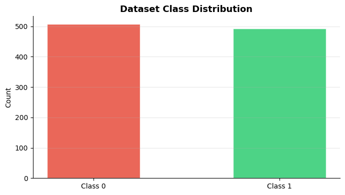
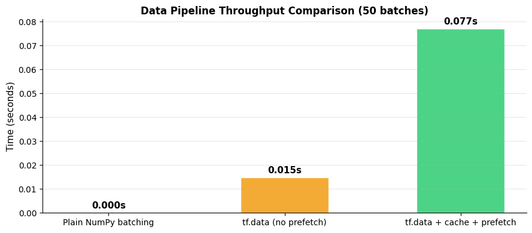
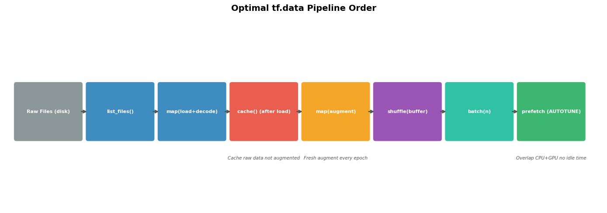

How do you build efficient data pipelines?#
Topics: tf.data.Dataset · from_tensor_slices · map() · batch() · shuffle() · prefetch() · cache() · Image Pipelines
1. Creating Datasets#
What it is#
tf.data.Datasetis TensorFlow’s data pipeline APILazy evaluation — data is loaded and processed on demand
Integrates directly with
model.fit()— pass dataset instead of numpy arrays
Common creation methods#
Method |
Use case |
|---|---|
|
In-memory numpy/tensor data |
|
Custom generator, dynamic data |
|
File-based datasets (images) |
|
Text files line by line |
|
Efficient binary format |
Key intuition#
Dataset is a lazy pipeline — nothing is computed until you iterate
Operations chain:
dataset.map().batch().prefetch()— each transforms the stream
Gotchas#
from_tensor_slicesloads all data into memory — use file-based methods for large datasetsDataset elements have fixed types and shapes — inconsistent shapes need padding
import tensorflow as tf
import numpy as np
import matplotlib.pyplot as plt
np.random.seed(42)
X = np.random.randn(1000, 8).astype(np.float32)
y = (X[:, 0] + X[:, 1] > 0).astype(np.int32)
# --- from_tensor_slices ---
dataset = tf.data.Dataset.from_tensor_slices((X, y))
print(f"Dataset element spec: {dataset.element_spec}")
print(f"Dataset type: {type(dataset)}")
# Peek at first batch
for x_batch, y_batch in dataset.take(1):
print(f"Single sample X: {x_batch.shape}, y: {y_batch.numpy()}")
# From numpy only
ds_x = tf.data.Dataset.from_tensor_slices(X)
# From dict
ds_dict = tf.data.Dataset.from_tensor_slices({'features': X, 'labels': y})
for sample in ds_dict.take(1):
print(f"Dict sample keys: {list(sample.keys())}")
# From generator
def data_generator():
for i in range(10):
yield np.random.randn(8).astype(np.float32), np.random.randint(0, 2)
ds_gen = tf.data.Dataset.from_generator(
data_generator,
output_signature=(
tf.TensorSpec(shape=(8,), dtype=tf.float32),
tf.TensorSpec(shape=(), dtype=tf.int32),
)
)
for x, label in ds_gen.take(2):
print(f"Generator sample: x={x.numpy()[:3]}..., y={label.numpy()}")
# Visualize dataset class distribution
labels = np.array([y.numpy() for _, y in dataset])
fig, ax = plt.subplots(figsize=(7, 4))
ax.bar(['Class 0', 'Class 1'], [(labels==0).sum(), (labels==1).sum()],
color=['#E74C3C', '#2ECC71'], alpha=0.85, edgecolor='white', width=0.5)
ax.set_title('Dataset Class Distribution', fontsize=13, fontweight='bold')
ax.set_ylabel('Count'); ax.grid(True, alpha=0.3, axis='y')
ax.spines['top'].set_visible(False); ax.spines['right'].set_visible(False)
plt.tight_layout()
plt.savefig('dataset_distribution.png', dpi=120, bbox_inches='tight')
plt.show()
WARNING: All log messages before absl::InitializeLog() is called are written to STDERR
I0000 00:00:1776953927.537896 12947 cudart_stub.cc:31] Could not find cuda drivers on your machine, GPU will not be used.
I0000 00:00:1776953927.586220 12947 cpu_feature_guard.cc:227] This TensorFlow binary is optimized to use available CPU instructions in performance-critical operations.
To enable the following instructions: AVX2 FMA, in other operations, rebuild TensorFlow with the appropriate compiler flags.
WARNING: All log messages before absl::InitializeLog() is called are written to STDERR
I0000 00:00:1776953929.301220 12947 cudart_stub.cc:31] Could not find cuda drivers on your machine, GPU will not be used.
E0000 00:00:1776953930.526346 12947 cuda_platform.cc:52] failed call to cuInit: INTERNAL: CUDA error: Failed call to cuInit: UNKNOWN ERROR (303)
I0000 00:00:1776953930.586298 12947 generator_dataset_op.cc:213] Memory patch applied: M_TRIM_THRESHOLD=128 kb was set.
Dataset element spec: (TensorSpec(shape=(8,), dtype=tf.float32, name=None), TensorSpec(shape=(), dtype=tf.int32, name=None))
Dataset type: <class 'tensorflow.python.data.ops.from_tensor_slices_op._TensorSliceDataset'>
Single sample X: (8,), y: 1
Dict sample keys: ['features', 'labels']
Generator sample: x=[-0.03302526 -0.50365025 -0.17237496]..., y=0
Generator sample: x=[-0.06942309 1.2132398 -0.09192669]..., y=1

2. Pipeline Operations: map, batch, shuffle, cache, prefetch#
What it is#
Chain of transformations applied lazily to the dataset stream
Each operation returns a new Dataset object
Operations#
Operation |
What it does |
|---|---|
|
Apply function to each element |
|
Group into batches of size n |
|
Randomly shuffle with buffer |
|
Cache in memory after first epoch |
|
Prepare next n batches while training |
|
Keep elements where fn returns True |
|
Repeat dataset n times |
Optimal pipeline order#
load → cache → map → shuffle → batch → prefetch
Gotchas#
shuffle(buffer_size)— larger buffer = better shuffling but more memoryprefetch(tf.data.AUTOTUNE)— lets TF choose optimal prefetch count automaticallycache()after first epoch serves from memory — huge speedup for small datasetsnum_parallel_calls=tf.data.AUTOTUNEinmap()parallelizes preprocessing
import tensorflow as tf
import numpy as np
import matplotlib.pyplot as plt
import time
np.random.seed(42)
X = np.random.randn(5000, 32).astype(np.float32)
y = (X[:, 0] > 0).astype(np.int32)
def preprocess(x, label):
x = x * 2.0 - 1.0
return x, label
# Standard pipeline
def make_pipeline(X, y, batch_size=64, shuffle=True, cache=True):
ds = tf.data.Dataset.from_tensor_slices((X, y))
if cache:
ds = ds.cache()
ds = ds.map(preprocess, num_parallel_calls=tf.data.AUTOTUNE)
if shuffle:
ds = ds.shuffle(buffer_size=1000)
ds = ds.batch(batch_size)
ds = ds.prefetch(tf.data.AUTOTUNE)
return ds
train_ds = make_pipeline(X[:4000], y[:4000])
val_ds = make_pipeline(X[4000:], y[4000:], shuffle=False)
print(f"Train dataset: {train_ds.element_spec}")
# Benchmark: plain numpy vs tf.data vs tf.data + prefetch
def time_iteration(ds_or_arrays, n_batches=50):
start = time.time()
if isinstance(ds_or_arrays, tf.data.Dataset):
for i, _ in enumerate(ds_or_arrays):
if i >= n_batches: break
else:
X_d, y_d = ds_or_arrays
for i in range(0, min(n_batches*64, len(X_d)), 64):
_ = X_d[i:i+64], y_d[i:i+64]
return time.time() - start
n_batches = 50 # define before use
plain_time = time_iteration((X[:4000], y[:4000]))
ds_no_pf = tf.data.Dataset.from_tensor_slices((X[:4000], y[:4000])).batch(64)
no_pf_time = time_iteration(ds_no_pf)
pf_time = time_iteration(train_ds)
fig, ax = plt.subplots(figsize=(9, 4))
methods = ['Plain NumPy batching', 'tf.data (no prefetch)', 'tf.data + cache + prefetch']
times = [plain_time, no_pf_time, pf_time]
colors = ['#E74C3C', '#F39C12', '#2ECC71']
bars = ax.bar(methods, times, color=colors, alpha=0.85, edgecolor='white', width=0.5)
ax.set_ylabel('Time (seconds)', fontsize=11)
ax.set_title(f'Data Pipeline Throughput Comparison ({n_batches} batches)', fontsize=12, fontweight='bold')
ax.grid(True, alpha=0.3, axis='y')
ax.spines['top'].set_visible(False); ax.spines['right'].set_visible(False)
for bar, t in zip(bars, times):
ax.text(bar.get_x()+bar.get_width()/2, bar.get_height()+0.001,
f'{t:.3f}s', ha='center', va='bottom', fontsize=11, fontweight='bold')
plt.tight_layout()
plt.savefig('pipeline_benchmark.png', dpi=120, bbox_inches='tight')
plt.show()
Train dataset: (TensorSpec(shape=(None, 32), dtype=tf.float32, name=None), TensorSpec(shape=(None,), dtype=tf.int32, name=None))

3. Pipeline Diagram & Best Practices#
Optimal pipeline pattern#
raw files → list_files → map(load+decode) → cache → map(augment) → shuffle → batch → prefetch
Key rules#
cache()before augmentation — cache raw data, augment on the fly each epochshuffle()beforebatch()— shuffling after batching only shuffles batch orderprefetch(AUTOTUNE)always last — overlaps data prep with GPU trainingnum_parallel_calls=AUTOTUNEin map — parallelizes CPU preprocessing
Interview Q&A#
Why is prefetch important?
Without prefetch: GPU waits for CPU to load next batch — GPU is idle
With prefetch: CPU prepares next batch while GPU trains on current batch — no idle time
What is the difference between cache() before and after map()?
cache()beforemap()— caches raw data, map runs every epoch (good for augmentation)cache()aftermap()— caches processed data, map runs once (good for fixed preprocessing)
Gotchas#
Never cache after augmentation — you’d get same augmented images every epoch
shuffle buffer too small → poor randomness; too large → slow startup and high memory
For image datasets: use
tf.data.AUTOTUNEeverywhere to let TF optimize
import tensorflow as tf
import numpy as np
import matplotlib.pyplot as plt
import matplotlib.patches as mpatches
# Visualize pipeline stages
fig, ax = plt.subplots(figsize=(14, 5))
ax.set_xlim(0, 15); ax.set_ylim(0, 5); ax.axis('off')
ax.set_title('Optimal tf.data Pipeline Order', fontsize=14, fontweight='bold')
stages = [
(0.3, 'Raw Files (disk)', '#7F8C8D'),
(2.1, 'list_files()', '#2980B9'),
(3.9, 'map(load+decode)', '#2980B9'),
(5.7, 'cache() (after load)', '#E74C3C'),
(7.5, 'map(augment)', '#F39C12'),
(9.3, 'shuffle(buffer)', '#8E44AD'),
(11.1, 'batch(n)', '#1ABC9C'),
(12.9, 'prefetch (AUTOTUNE)', '#27AE60'),
]
prev_x = None
for x, label, color in stages:
rect = mpatches.FancyBboxPatch((x, 1.8), 1.6, 1.4,
boxstyle='round,pad=0.07', facecolor=color, edgecolor='white',
linewidth=1.5, alpha=0.9)
ax.add_patch(rect)
ax.text(x+0.8, 2.5, label, ha='center', va='center',
fontsize=8, fontweight='bold', color='white')
if prev_x is not None:
ax.annotate('', xy=(x, 2.5), xytext=(prev_x+1.6, 2.5),
arrowprops=dict(arrowstyle='->', color='#555', lw=2))
prev_x = x
notes = [
(5.7+0.8, 1.3, 'Cache raw data not augmented'),
(7.5+0.8, 1.3, 'Fresh augment every epoch'),
(12.9+0.8, 1.3, 'Overlap CPU+GPU no idle time'),
]
for nx, ny, note in notes:
ax.text(nx, ny, note, ha='center', va='center', fontsize=7.5,
color='#555555', style='italic')
plt.tight_layout()
plt.savefig('pipeline_diagram.png', dpi=120, bbox_inches='tight')
plt.show()
# Image pipeline pattern
print("Image pipeline pattern:")
print("def load_and_preprocess(path, label):")
print(" img = tf.io.read_file(path)")
print(" img = tf.image.decode_jpeg(img, channels=3)")
print(" img = tf.image.resize(img, [224, 224])")
print(" img = tf.cast(img, tf.float32) / 255.0")
print(" return img, label")
print()
print("def augment(img, label):")
print(" img = tf.image.random_flip_left_right(img)")
print(" img = tf.image.random_brightness(img, 0.1)")
print(" return img, label")
print()
print("train_ds = (")
print(" tf.data.Dataset.from_tensor_slices((train_paths, train_labels))")
print(" .map(load_and_preprocess, num_parallel_calls=tf.data.AUTOTUNE)")
print(" .cache()")
print(" .map(augment, num_parallel_calls=tf.data.AUTOTUNE)")
print(" .shuffle(buffer_size=1000)")
print(" .batch(32)")
print(" .prefetch(tf.data.AUTOTUNE)")
print(")")

Image pipeline pattern:
def load_and_preprocess(path, label):
img = tf.io.read_file(path)
img = tf.image.decode_jpeg(img, channels=3)
img = tf.image.resize(img, [224, 224])
img = tf.cast(img, tf.float32) / 255.0
return img, label
def augment(img, label):
img = tf.image.random_flip_left_right(img)
img = tf.image.random_brightness(img, 0.1)
return img, label
train_ds = (
tf.data.Dataset.from_tensor_slices((train_paths, train_labels))
.map(load_and_preprocess, num_parallel_calls=tf.data.AUTOTUNE)
.cache()
.map(augment, num_parallel_calls=tf.data.AUTOTUNE)
.shuffle(buffer_size=1000)
.batch(32)
.prefetch(tf.data.AUTOTUNE)
)